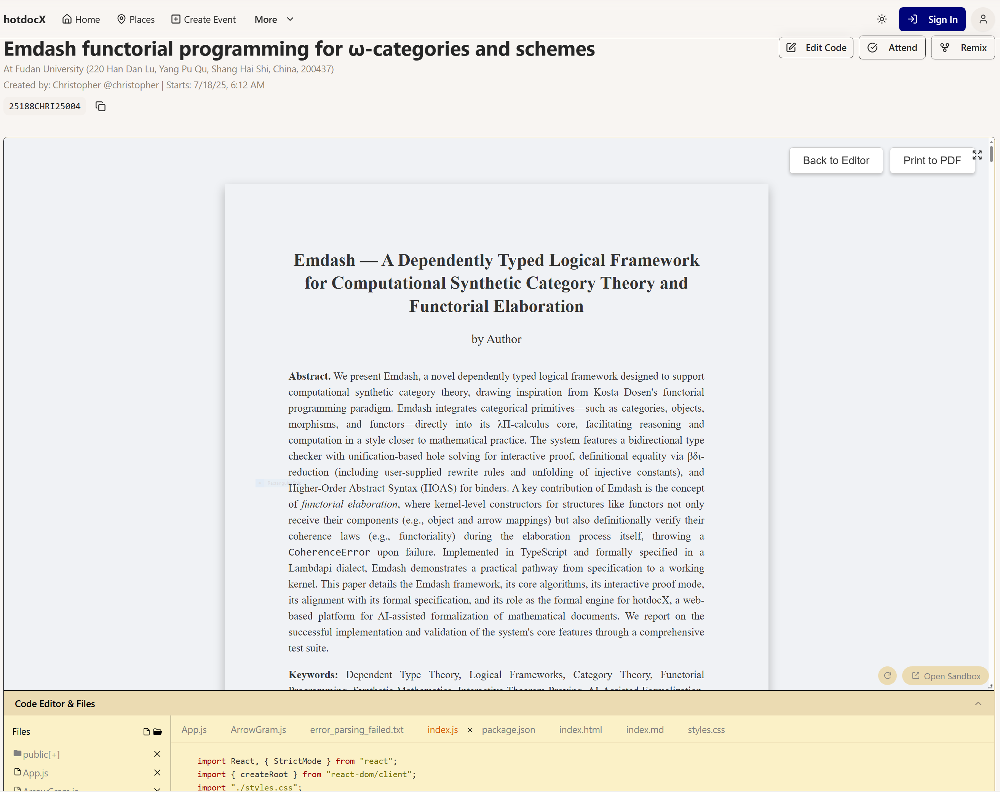

Based on the paper by Author
"The core entities of a mathematical domain—such as categories and functors—are not merely encoded but are themselves the primitive building blocks of the formal language."
Inspired by Kosta Dosen [1, 2]
Proofs of structural integrity should be computations, not separate objects.
A novel dependently typed logical framework that implements these functorial principles.
The system is designed to be extensible, allowing users to add their own definitions, rewrite rules, and unification hints.
In Coq/Agda/Lean, you define a functor by providing:
The structure and its laws are separate entities.
In Emdash, defining a functor uses a single primitive:
MkFunctorTerm(C, D, fmap0, fmap1)The elaboration engine itself definitionally verifies the coherence laws during type checking.
Coherence is a check, not a proof.
The implementation is not ad-hoc; it's guided by a formal, executable specification.
constant symbol Cat : TYPE;
injective symbol Obj : Cat → TYPE;
injective symbol Hom : Π [A : Cat] (X: Obj A) (Y: Obj A), TYPE;
// ...
constant symbol Functor_cat : Π(A : Cat), Π(B : Cat), Cat;
// Morphisms in the functor category ARE natural transformations
rule @Hom (Functor_cat _ _) $F $G ↪ Transf $F $G;
// Functoriality is a computational rule
rule compose_morph (@fapp1 _ _ $F _ _ $a) (@fapp1 _ _ $F _ _ $a')
↪ fapp1 $F (compose_morph $a $a');
This declarative style makes coherence laws part of the system's core computational behavior.
Emdash isn't just for defining; it's for proving.
A proof-in-progress is a term with unsolved goals, called Holes (`?h0`).
Goal ?g0: ⊢ Π (n : Nat). Nat
Users construct proofs by refining these holes using tactics.
Goal: Prove `id : Nat -> Nat`
// 1. State Goal
defineGlobal("id_nat_proof", Pi("n", Expl, Nat, _ => Nat), Hole("?g0"))
// > Goal ?g0: ⊢ Π (n : Nat). Nat
// 2. Introduce hypothesis
intro(Var("id_nat_proof"), "?g0", "n")
// > Hole ?g0 solved with `λ n. ?g1`
// > New Goal ?g1: n : Nat ⊢ Nat
// 3. Solve goal with exact term
exact(Var("id_nat_proof"), "?g1", Var("n"))
// > Hole ?g1 solved with `n`
// 4. Proof Complete!
// Final term: λ (n : Nat). n
Emdash is a working TypeScript implementation, verified by a comprehensive test suite.
The system behaves as specified.
Emdash is the formal engine for hotdocX, a web platform for AI-assisted formalization.

Goal: Transform mathematical documents into executable, verifiable, and interactive formal content.
Emdash's interactive proof mode and clear error reporting are designed for human-AI collaboration.
Emdash demonstrates a practical pathway for "functorial programming":
Project Repository: github.com/hotdocx/emdash
hotdocX Platform: hotdocx.github.io
Continue: ./slides-part-2-hotdocx.html